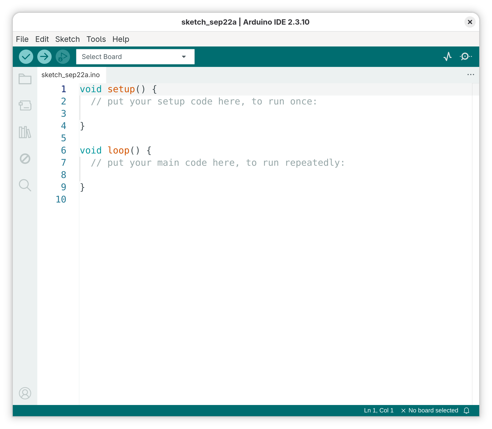
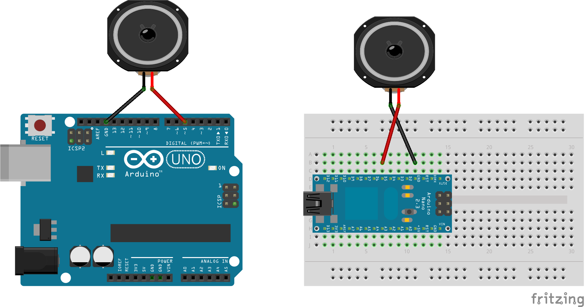

1. 0. Arduino?
- What is it?
Ecosystem (circuitry + programming language + IDE) that allows us to create logic to interface/control hardware and software
- What can you make?
- Coin slot detector: https://www.instructables.com/id/coin-slot-detector/
- Geiger counter: https://www.instructables.com/Arduino-DIY-Geiger-Counter/
- Beat slicer: https://vimeo.com/45422593
- Cabinet of Curiosness: https://youtu.be/JCiXV6b7N0A
1.0.1. 0.1 INSTALLATION
- Visit https://www.arduino.cc/en/software
- Scrool down to Arduino IDE, select the appropriate options for the operating system you're using:
- macOS: download and unzip the file, where you will find the
Arduino.appprogram. Detailed info can be found here. - Windows: use the option "Win 10 and newer" to download the
.exefile. DO NOT use the "ZIP file" option. Runnig the.exeshould give you a proper installation prompt (those where you click "next" several times…) as illustrated in the detailed guide here. - Linux: The installation method changes depending on your distribution. For Ubuntu based distributions, follow this guide.
- macOS: download and unzip the file, where you will find the
- If the installation was sucessfull you should now have a program called
Arduinoin your list of programs, which when opened looks something like this. That means you are all set.

2. 1. BLINK
- Open a new Arduino IDE, delete everything, copy and paste the code below
- Select the correct board and port in
Tools -> BoardandTools -> Port - Save the file
- Upload it
2.0.1. 1.1 EXAMPLE
int pinLed = 13; void setup() { pinMode(pinLed, OUTPUT); } void loop() { digitalWrite(pinLed, HIGH); delay(1000); digitalWrite(pinLed, LOW); delay(500); }
2.0.2. 1.2 NOTES
- Folder structure
- Naming conventions
2.0.3. 1.3 MODS
- What are you able to change in this code? What are your entry points?
3. 2. tone()
3.0.1. 2.1 CIRCUIT

3.0.2. 2.2 EXAMPLE
void setup() {} void loop() { tone(5, 100); }
3.0.3. 2.3 NOTES
void setup()andvoid loop()- Functions & arguments
- RTFM - https://docs.arduino.cc/language-reference/
- Syntax conventions
3.0.4. 2.4 MODS
- From
tone()reference: "Only one tone can be generated at a time"- Can you do this then?
void setup() {} void loop() { tone(5, 40); tone(5, 41); }
3.0.5. 2.5 TO THINK…
- Attitude towards the experience
- Manipulation of processes not materials
- "[action] the outcome of which is unknown"
- Conditional Design Manifesto
- How does this attitude impacts your creative decisions?
4. 3. delay()
4.1. 3.1 EXAMPLE 1
void setup() {} void loop() { tone(5, 100); delay(200); tone(5, 200); delay(200); }
- Remember the 0th rule of programming: RTFM!
- What arguments is the
delay()function expecting?
- What arguments is the
4.2. 3.2 MODS
- From
tone()reference, under Parameters- "
duration: the duration of the tone in milliseconds (optional)"
- "
- Then why doesn't this work?
void setup() {} void loop() { tone(5, 100, 50); }
4.3. 3.3 EXAMPLE 2
- With that, we have a proto-sequencer
void setup() {} void loop() { tone(5, 100, 30); // now with three arguments delay(100); // and comments! tone(5, 200, 30); delay(100); tone(5, 300, 30); delay(100); tone(5, 400, 30); delay(100); }
- What frequency values to choose?
- Rational ratios (double, half, 1/3, etc)
- Arithmetic and geometric sequences
- Musical pitches: http://pages.mtu.edu/~suits/notefreqs.html
- Numbers really close together
- Numbers really far apart
- Any value!
4.4. 3.4 NOTES
- Comments
- Amount of arguments
- Order/execution time
4.5. 3.5 TO THINK…
- Parameters are the same a traditional score: pitch, onset of attack, and duration. But with (at least) two differences:
- Different representation system for parameters: Hz vs. pitch && milliseconds vs. rhythm.
- Different affordances from the system: you can't ask a pianist to play two notes 10 milliseconds apart.
- There's a non-transparency of the medium. Engaging with the same material through a different mediator can reveal new things.
5. 4. VARIABLES
5.1. 4.1 EXAMPLE 1
- Stranger tempo…
- Seems slow. How can we fix it?
void setup() {} void loop() { tone(5, 65); delay(250); tone(5, 82); delay(250); tone(5, 98); delay(250); tone(5, 123); delay(250); tone(5, 130); delay(250); tone(5, 123); delay(250); tone(5, 98); delay(250); tone(5, 82); delay(250); }
- There's your problem…
int delayTime = 180; void setup() {} void loop() { tone(5, 65); delay(delayTime); tone(5, 82); delay(delayTime); tone(5, 98); delay(delayTime); tone(5, 123); delay(delayTime); tone(5, 130); delay(delayTime); tone(5, 123); delay(delayTime); tone(5, 98); delay(delayTime); tone(5, 82); delay(delayTime); }
5.1.1. 4.1.2 NOTES
- "Box with a tag" analogy
- Naming conventions
5.1.2. 4.1.3 MODS
- How can you change speaker to pin 7?
5.2. 4.2 EXAMPLE 2
int pinSpeaker = 7; int baseFreq = 300; int delayTime = 100; void setup() {} void loop() { tone(pinSpeaker, baseFreq, 90); delay(delayTime); tone(pinSpeaker, baseFreq + 100, 90); delay(delayTime); tone(pinSpeaker, baseFreq + 200, 90); delay(delayTime); tone(pinSpeaker, baseFreq + 150, 90); delay(delayTime); }
- Simbolic representation of information
- Does the line
tone(pinSpeaker, baseFreq + 100, 90);changes the value of the variablebaseFreq? What's the value ofbaseFreqat line 12? And 14?
- Does the line
5.3. 4.3 EXAMPLE 3
- For the math/tunning afficionados
int pinSpeaker = 7; float baseFreq = 100; int delayTime = 150; void setup() {} void loop() { tone(pinSpeaker, baseFreq); delay(delayTime); tone(pinSpeaker, baseFreq * 2); delay(delayTime); tone(pinSpeaker, baseFreq * 3/2); delay(delayTime); tone(pinSpeaker, baseFreq * 5/4); delay(delayTime); tone(pinSpeaker, baseFreq * 9/8); delay(delayTime); tone(pinSpeaker, baseFreq); delay(delayTime); }
5.4. 4.4 MODS
- How can we make the duration of the sound proportional to the duration of the pause? For example, always half? Or 90%?
- How can we recreate the example 2 from item 3.3 but now using variables that describe the logic of how our sequence of frequencies? Is there more than one way of doing it?
5.5. 4.5 TO THINK…
- Variables allows us to create logic around a piece of data in our program.
- Changes the way we navigate the layers of abstraction of our material.
6. 5. random()
6.0.1. 5.1 EXAMPLE 1
int pinSpeaker = 7; int delayTime = 100; void setup() {} void loop() { tone(pinSpeaker, random(100, 500), 90); delay(delayTime); }
6.0.2. 5.2 EXAMPLE 2
- Without running, can you imagine the difference in behaviour between these two examples?
int pinSpeaker = 7; int delayTime = 180; void setup() {} void loop() { tone(pinSpeaker, 65, random(20, 180)); delay(delayTime); tone(pinSpeaker, 82, random(20, 180)); delay(delayTime); tone(pinSpeaker, 98, random(20, 180)); delay(delayTime); tone(pinSpeaker, 123, random(20, 180)); delay(delayTime); tone(pinSpeaker, 130, random(20, 180)); delay(delayTime); tone(pinSpeaker, 123, random(20, 180)); delay(delayTime); tone(pinSpeaker, 98, random(20, 180)); delay(delayTime); tone(pinSpeaker, 82, random(20, 180)); delay(delayTime); }
int pinSpeaker = 7; int delayTime = 180; void setup() {} void loop() { long dur = random(20, 180); //notice the data type of the variable tone(pinSpeaker, 65, dur); delay(delayTime); tone(pinSpeaker, 82, dur); delay(delayTime); tone(pinSpeaker, 98, dur); delay(delayTime); tone(pinSpeaker, 123, dur); delay(delayTime); tone(pinSpeaker, 130, dur); delay(delayTime); tone(pinSpeaker, 123, dur); delay(delayTime); tone(pinSpeaker, 98, dur); delay(delayTime); tone(pinSpeaker, 82, dur); delay(delayTime); }
6.0.3. 5.3 EXAMPLE 3
- Noise!
int pinSpeaker = 7; void setup() {} void loop() { tone(pinSpeaker, random(40, 20000)); }
- Filtered noise!
int pinSpeaker = 7; void setup() {} void loop() { tone(pinSpeaker, random(100, 400)); }
7. And now, for something completely different…
int pinSpeaker = 7; void setup() {} void loop() { tone(pinSpeaker, analogRead(A0)); }
8. 6. if()
8.1. 6.1 EXAMPLE 1
int pinSpeaker = 7; int delayTime = 100; void setup() {} void loop() { int thisNumber = 5; if (thisNumber < 7) { tone(pinSpeaker, 100, 50); delay(250); } }
8.1.1. 6.1.1 NOTES
- There are only two possible answers for the "condition question": yes or no.
8.2. 6.2 EXAMPLE 2
- Why doesn't this seem to work?
int pinSpeaker = 7; int delayTime = 100; void setup() {} void loop() { int thisNumber = random(10); if (thisNumber < 5) { tone(pinSpeaker, 100, 50); delay(250); } }
8.3. 6.3 EXAMPLE 3
int pinSpeaker = 7; int delayTime = 200; int longDur = 100; int shortDur = 20; void setup() {} void loop() { int dice = random(0, 10); if (dice < 5) { tone(pinSpeaker, 100, longDur); delay(delayTime); tone(pinSpeaker, 150, longDur); delay(delayTime); tone(pinSpeaker, 180, longDur); delay(delayTime); tone(pinSpeaker, 150, longDur); delay(delayTime); } if (dice >= 5) { tone(pinSpeaker, 100, shortDur); delay(delayTime); tone(pinSpeaker, 150, shortDur); delay(delayTime); tone(pinSpeaker, 180, shortDur); delay(delayTime); tone(pinSpeaker, 150, shortDur); delay(delayTime); } }
- Challenges:
- Using the
noTone()function, modify the previous example so that it instead of alternating between two sequences with different frequencies and durations, it alternates between one sequence and silence. - Remove the hardcoded values for the duration (the
longDurandshortDurvariables) and make the logic for their values dependent solely on the time of the pause between notes.
- Using the
8.4. 6.4 EXAMPLE 4
int pinSpeaker = 7; int delayTime = 100; void setup() {} void loop() { int baseFreq = 100; int dice = random(0, 10); if (dice < 2) { baseFreq = random(80, 300); } tone(pinSpeaker, baseFreq, 90); delay(delayTime); tone(pinSpeaker, baseFreq + 100, 90); delay(delayTime); tone(pinSpeaker, baseFreq + 200, 90); delay(delayTime); tone(pinSpeaker, baseFreq + 150, 90); delay(delayTime); }
- How can you change the probability of events?
- Why no
int baseFreqon line 14, but onlybaseFreq?
8.4.1. 6.3.1 NOTES
TRUEandFALSElogic- Syntax errors vs. logic errors
ifstatements as- a) control structures that can dictate whether or not events will happen (making "informed decisions").
- b) "invisible hands" that can modify values and modulate the entry points in your code
9. 7. ITERATION
9.0.1. 7.1 EXAMPLE 1
int pinSpeaker = 7; int freq = 40; void setup() {} void loop() { tone(pinSpeaker, freq); freq = freq + 1; delay(500); }
- 7.1.1 NOTES
x = x + 1is mathematically untrue, but computationally valid- Iteration as a gradual, self-referencing process
- 7.1.2 MODS
- How can you make it rise faster, and then restart?
- "Divide and conquer"
- How can you make it rise faster, and then restart?
9.0.2. 7.2 EXAMPLE 2
- Don't forget your origins… The process of exploration is cumulative, where new techniques or concepts (such as iteration) can "unlock" new affordances from previous examples.
int pinSpeaker = 7; int baseFreq = 800; int delayTime = 100; void setup() {} void loop() { tone(pinSpeaker, baseFreq, 90); delay(delayTime); tone(pinSpeaker, baseFreq + 100, 90); delay(delayTime); tone(pinSpeaker, baseFreq + 200, 90); delay(delayTime); tone(pinSpeaker, baseFreq + 150, 90); delay(delayTime); baseFreq = baseFreq - 10; }
- Even simpler…
int pinSpeaker = 7; int delayTime = 5; int i = 0; void setup() {} void loop() { tone(pinSpeaker, 100); tone(pinSpeaker, 100 + i); i = i + 1; }
- Or noisier
int i = 0; int pinSpeaker = 7; int delayTime = 5; void setup() {} void loop() { tone(pinSpeaker, 100 + i); delay(delayTime); tone(pinSpeaker, 2000 - i); delay(delayTime); i = i + 1; }
- Or like a quasi-Shepard tone
int pinSpeaker = 7; int delayTime = 5; float i = 0; //mind the data type! void setup() {} void loop() { tone(pinSpeaker, 100 + i); delay(delayTime); tone(pinSpeaker, 100 + (i/10)); delay(delayTime); i = i + 10; }
9.0.3. 7.3 EXAMPLE 3
- Without running, what is going to happen here?
int pin = 7; int freq = 100; int i = 0; void setup() {} void loop() { tone(pin, freq); freq = freq - 1; if (freq < 32) //where does 32 come from? RTFM! { freq = 100; } delay(10); }
- Question: how can I invert this glissando?
9.0.4. 7.4 EXAMPLE 4
- Modulate your modulators…
- Compare this to example 3 on item 5.3
int pinSpeaker = 7; int randMin = 17000; void setup() {} void loop() { tone(pinSpeaker, random(randMin, 20000)); randMin = randMin - 1; }
10. 8. TUDO JUNTO E MISTURADO
- This code uses all the concepts shown up until now, applied to a single example. How?
int pinSpeaker = 7; int delayTime = 100; int dur = 90; int randMax = 55; void setup() {} void loop() { int freqGliss = random(50, randMax); tone(pinSpeaker, freqGliss, dur); delay(delayTime); randMax = randMax + 10; if (randMax > 1000) { randMax = 55; } }